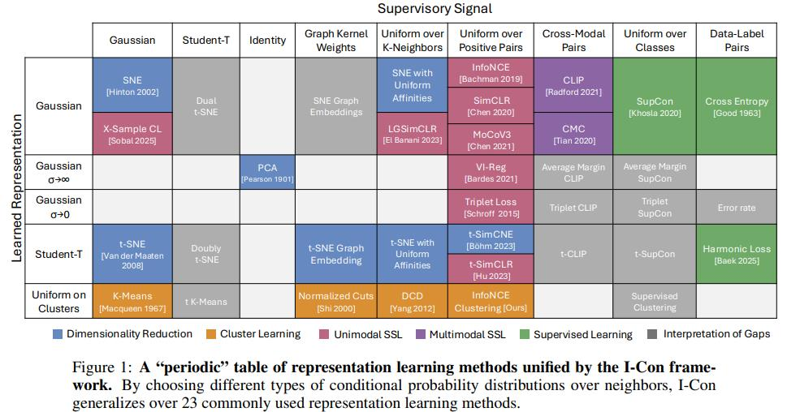
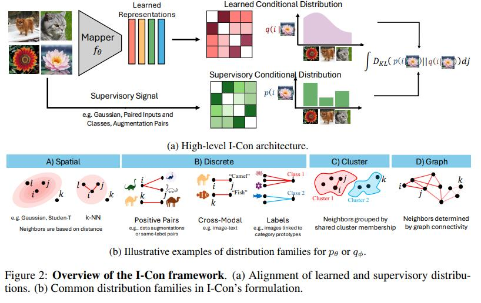
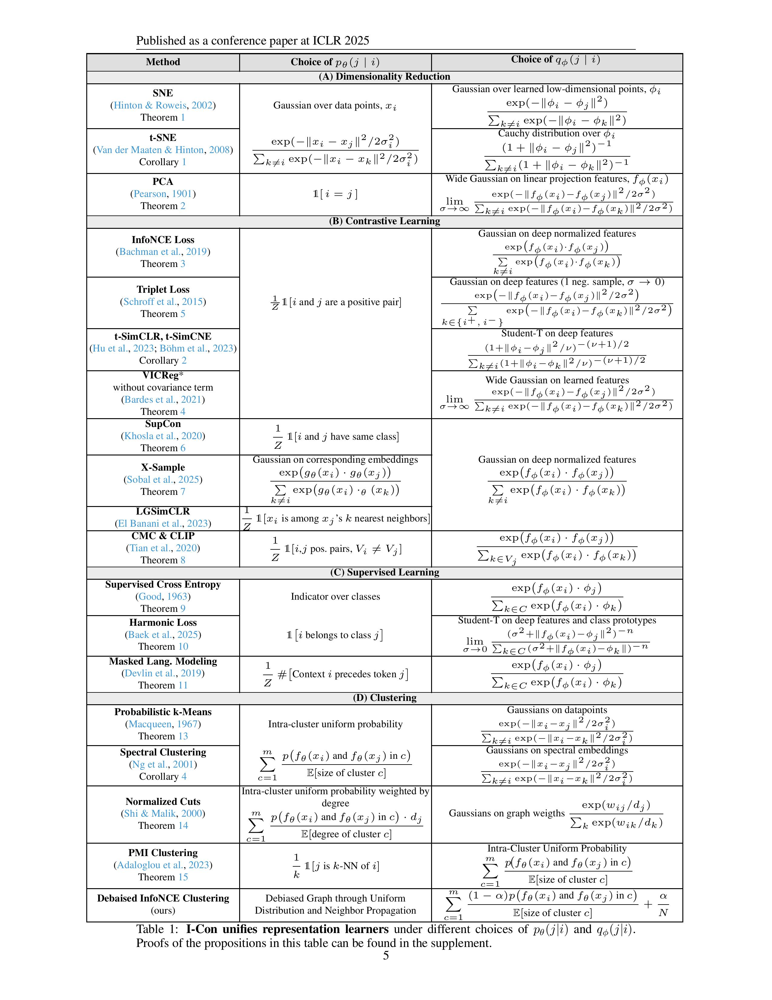

（几乎涵盖一切的）表示学习统一框架
I-Con （I-Con: A Unifying Framework for Representation Learning ，ICLR 2025）是第一个将监督学习、对比学习、聚类和降维目标统一到一个损失函数下的框架，从kmeans、TSNE到SimCLR、CLIP都能统一到一起。



我们首先定义 $x_{i}\in\mathbb{R}^{d}$ 代表高维数据点, $\phi_{i}\in\mathbb{R}^{m}$ 代表低维嵌，其中 $m\ll d$.
统一SNE
基于SNE的定义，其目标分布（监督部分），由高维空间中的领域分布描述：
$p_{\theta}(j|i)=\frac{exp(-||x_{i}-x_{j}||^{2}/2\sigma_{i}^{2})}{\sum_{k\ne i}exp(-||x_{i}-x_{k}||^{2}/2\sigma_{i}^{2})}$
学习的低维领域分布是：
$q_{\phi}(j|i)=\frac{exp(-||\phi_{i}-\phi_{j}||^{2})}{\sum_{k\ne i}exp(-||\phi_{i}-\phi_{k}||^{2})}.$
目标是使它们之间的KL散度最小化：
$\mathcal{L}=\sum_{i}D_{KL}(p_{\theta}(\cdot|i)||q_{\phi}(\cdot|i))=\sum_{i}\sum_{j}p_{\theta}(j|i)log\frac{p_{\theta}(j|i)}{q_{\phi}(j|i)}.$
统一tSNE
tSNE和SNE类似，不过低维分布变为了具有一个自由度的student t分布。
$q_{\phi}(j|i)=\frac{(1+||\phi_{i}-\phi_{j}||^{2})^{-1}}{\sum_{k\ne i}(1+||\phi_{i}-\phi_{k}||^{2})^{-1}}$
统一PCA
引理1. Let $X:={x_{i}}_{i=1}^{n}$, then the following cohesion variance loss
$L_{cohesion-var}=\frac{1}{n}\sum_{ij}w_{ij}||f_{\phi}(x_{i})-f_{\phi}(x_{j})||^{2}-2Var(X)$
is an instance of I-Con in the special case $w_{ij}=p(j|i)$ and $q_{\phi}$ is Gaussian as with a large width as $\sigma\rightarrow\infty$
证明：By using AM-GM inequality, we have [cite: 269]
$\frac{1}{n}\sum_{k=1}^{n}e^{-z_{k}}\ge(\Pi_{k=1}^{n}e^{-z_{k}})^{\frac{1}{n}}\Rightarrow\frac{1}{n}\sum_{k=1}^{n}e^{-z_{k}}\ge(e^{-\sum_{k=1}^{n}z_{k}})^{\frac{1}{n}}$
which implies that [cite: 269]
$log\sum_{k=1}^{n}e^{-z_{k}}-log~n\ge log(e^{-\sum_{k=1}^{n}z_{k}})^{\frac{1}{n}}\Rightarrow log\sum_{k=1}^{n}e^{-z_{k}}\ge-\frac{1}{n}\sum_{k=1}^{n}z_{k}+log(n)$
Alternatively, this can be written as [cite: 269]
$-log\sum_{k=1}^{n}e^{-z_{k}}\le\frac{1}{n}\sum_{k=1}^{n}z_{k}-log(n)$
Now assume that we have a Gaussian Kernel $q_{\phi}$ [cite: 269]
$q_{\phi}(j|i)=\frac{exp(-||f_{\phi}(x_{i})-f_{\phi}(x_{j})||^{2}/\sigma^{2})}{\sum_{k\ne i}exp(-||f_{\phi}(x_{i})-f_{\phi}(x_{k})||^{2}/\sigma^{2})},$
Therefore, given the inequality of exp-sum that we showed above, we have [cite: 269]
$log~q_{\phi}(j|i)=-\frac{||f_{\phi}(x_{i})-f_{\phi}(x_{j})||^{2}}{\sigma^{2}}-log\sum_{k\ne i}exp(-\frac{||f_{\phi}(x_{i})-f_{\phi}(x_{k})||^{2}}{\sigma^{2}})$
$\le-\frac{1}{\sigma^{2}}||f_{\phi}(x_{i})-f_{\phi}(x_{j})||^{2}+\frac{1}{n\sigma^{2}}\sum_{k\ne i}||f_{\phi}(x_{i})-f_{\phi}(x_{k})||^{2}-log(n)$
$=-\frac{1}{\sigma^{2}}(-||f_{\phi}(x_{i})-f_{\phi}(x_{j})||^{2}+\frac{1}{n}\sum_{k\ne i}||f_{\phi}(x_{i})-f_{\phi}(x_{k})||^{2})-log(n)$Therefore, the cross entropy $H(p_{\theta},q_{\phi}).$ is bounded by [cite: 269]
$H(p_{\theta},q_{\phi})=-\frac{1}{n}\sum_{i}\sum_{j}p(j|i)log~q_{\phi}(j|i)$
$\le\frac{1}{n}\sum_{i}\sum_{j}p(j|i)(\frac{1}{\sigma^{2}}(-||f_{\phi}(x_{i})-f_{\phi}(x_{j})||^{2}+\frac{1}{n}\sum_{k\ne i}||f_{\phi}(x_{i})-f_{\phi}(x_{k})||^{2})-log(n))$
$=\frac{1}{\sigma^{2}}(\frac{1}{n}\sum_{ij}p(j|i)||f_{\phi}(x_{i})-f_{\phi}(x_{j})||^{2}-\frac{1}{n^{2}}\sum_{ijk}p(j|i)||f_{\phi}(x_{i})-f_{\phi}(x_{k})||^{2})-log(n)$
$=\frac{1}{\sigma^{2}}(\frac{1}{n}\sum_{ij}p(j|i)||f_{\phi}(x_{i})-f_{\phi}(x_{j})||^{2}-2Var(X))+log(n)$
$=\frac{1}{\sigma^{2}}(\frac{1}{n}\sum_{ij}p(j|i)||f_{\phi}(x_{i})-f_{\phi}(x_{j})||^{2}-2Var(X))+log(n)$
$=\frac{1}{\sigma^{2}}\mathcal{L}_{cohesion-var}+log(n)$On the other hand, the L.H.S. can be upper bounded by using second order bound $e^{-z}\le1-z+z^{2}/2$, which implies that [cite: 270]
$-log\sum_{k=1}^{n}e^{-z_{k}}\ge log(1-\frac{1}{n}\sum_{k=1}^{n}z_{k}+\frac{1}{n}\sum_{k=1}^{n}z_{k}^{2})-log(n)$ [cite: 270]
— PAGE 19 —
On the other hand, $log(1+u)\ge u-u^{2}/2$, therefore, [cite: 271]
$-log\sum_{k=1}^{n}e^{-z_{k}}\ge(1-\frac{1}{n}\sum_{k=1}^{n}z_{k}+\frac{1}{n}\sum_{k=1}^{n}z_{k}^{2})-\frac{1}{2}(1-\frac{1}{n}\sum_{k=1}^{n}z_{k}+\frac{1}{n}\sum_{k=1}^{n}z_{k}^{2})^{2}-log(n)$
Therefore, in the limit $\sigma\rightarrow\infty$ the bounds become tighter and the I-Con loss approaches the cohesion variance loss. [cite: 271] $\Pi$ [cite: 272]
根据引理1， 当 $p_{j|i}=1[i=j],$ 我们有
$\mathcal{L}=\frac{1}{n}\sum_{ij}p_{j|i}||f_{\phi}(x_{i})-f_{\phi}(x_{j})||^{2}-2Var(X)$
$=\frac{1}{n}\sum_{i}||f_{\phi}(x_{i})-f_{\phi}(x_{i})||^{2}-2Var(X)$
$=-2Var(X)$
故最小化 L 等于最大化方差，这与PCA的目标一致.如果我们限制 $f_{\phi}$为一个线性投影映射，则等同于PCA。
统一InfoNCE
InfoNCE 旨在最大化正样本对之间的相似度，同时最小化负样本对之间的相似度，在学习的特征空间中。在 I-Con 框架中，这可以解释为最小化两个分布之间的散度：原始空间中的邻域分布和学习到的嵌入空间中的分布。
Proof. InfoNCE aims to maximize the similarity between positive pairs while minimizing it for negative pairs in the learned feature space. [cite: 283] In the I-Con framework, this can be interpreted as minimizing the divergence between two distributions: the neighborhood distribution in the original space and the learned distribution in the embedding space. [cite: 284] The neighborhood distribution $p_{\theta}(j|i)$ is uniform over the positive pairs, defined as: [cite: 285]
$p_{\theta}(j|i)=\begin{cases}\frac{1}{k}\ 0\end{cases}$ if $x_{j}$ is among the k positive views of $x_{i}$ [cite: 286]
where k is the number of positive pairs for $x_{i}.$ [cite: 286]
The learned distribution $q_{\phi}(j|i)$ is based on the similarities between the embeddings $f_{\phi}(x_{i})$ and $f_{\phi}(x_{j}).$ constrained to unit norm $(||f_{\phi}(x_{i})||=1).$ Using a temperature-scaled Gaussian kernel, this distribution is given by: [cite: 286]
$q_{\phi}(j|i)=\frac{exp(f_{\phi}(x_{i})\cdot f_{\phi}(x_{j})/\tau)}{\sum_{k\ne i}exp(f_{\phi}(x_{i})\cdot f_{\phi}(x_{k})/\tau)}.$ [cite: 286]
— PAGE 20 —
where $\tau$ is the temperature parameter controlling the sharpness of the distribution. [cite: 287] Since $||f_{\phi}(x_{i})||=1$, the Euclidean distance between $f_{\phi}(x_{i})$ and $f_{\phi}(x_{j})$ is $2-2(f_{\phi}(x_{i})\cdot f_{\phi}(x_{j}))$. [cite: 288] The InfoNCE loss can be written in its standard form: [cite: 289]
$\mathcal{L}{InfoNCE}=-\sum{i}log\frac{exp(f_{\phi}(x_{i})\cdot f_{\phi}(x_{i}^{+})/\tau)}{\sum_{k}exp(f_{\phi}(x_{i})\cdot f_{\phi}(x_{k})/\tau)}$
where $j^{+}$ is the index of a positive pair for i. [cite: 289] Alternatively, in terms of cross-entropy, the loss becomes: [cite: 290]
$\mathcal{L}{InfoNCE}\propto\sum{i}\sum_{j}p_{\theta}(j|i)log~q_{\phi}(j|i)=H(p_{\theta},q_{\phi})$ , [cite: 290]
where $H(p_{\theta},q_{\phi})$ denotes the cross-entropy between the two distributions. [cite: 290] Since $p_{\theta}(j|i)$ is fixed, minimizing the cross-entropy $H(p_{\theta},q_{\phi})$ is equivalent to minimizing the KL divergence $D_{KL}(p_{\theta}||q_{\phi})$. [cite: 291] By aligning the learned distribution $q_{\phi}(j|i)$ with the target distribution $p_{\theta}(j|i)$, InfoNCE operates within the I-Con framework, where the neighborhood structure in the original space is preserved in the embedding space. [cite: 292] Thus, InfoNCE is a direct instance of I-Con, optimizing the same divergence-based objective. [cite: 293] $\Pi$ [cite: 294]
Corollary 2. t-SimCLR and t-SimCNE (Hu et al., 2023; Böhm et al., 2023) are instances of the I-Con framework. [cite: 294] Given the proof of Theorem 3, we can see that t-SimCLR is equivelant by having the same $p_{\theta}$ but $q_{\phi}$ would change from a Gaussian distribution over cosine similarity to a Student-T distribution over a Euclidean distance. [cite: 295]
$q_{\phi}(j|i)=\frac{(||f_{\phi}(x_{i})-f_{\phi}(x_{j})||^{2}/\tau)^{-1}}{\sum_{k\ne i}(||f_{\phi}(x_{i})-f_{\phi}(x_{k})||^{2}/\tau)^{-1}},$ [cite: 296]
Theorem 4. VICReg Bardes et al. (2021) without a covariance term is an instance of the I-Con framework. [cite: 296]
Given Proposition 1, we know that any loss in the cohesion variance form is an instance of I-Con: [cite: 297]
$\mathcal{L}=\frac{1}{n}\sum_{ij}p_{j|i}||f_{\phi}(x_{i})-f_{\phi}(x_{j})||^{2}-2Var(X)$
$\mathcal{L}=\frac{1}{n}\sum_{i}||f_{\phi}(x_{i})-f_{\phi}(x_{i^{+}})||^{2}-2Var(X)$
If we choose $p_{j|i}$ to be an indicator over positive pairs, i and $i^{+}$, we obtain [cite: 297]
which is the VICReg loss without the covariance term and with an invariance-to-variance term ratio of 1:2. [cite: 297] Observe that VICReg does not have negative pairs because it applies an equal repulsion force to all points. [cite: 298] This is equivalent to taking $\sigma\rightarrow\infty$ in the conditional Gaussian distribution over the embeddings. [cite: 299]
Theorem 5 (Triplet Loss (Schroff et al., 2015)). Triplet Loss can be viewed as an instance of the I-Con framework with the following distributions $p_{\theta}(j|i)$ and $q_{\phi}(j|i).$: [cite: 300]
$P_{\theta}(j|i) = \begin{cases} 1 & \text{if } x_{j} \text{ is among the k positive views of } x_{i} \ 0 & \text{otherwise,} \end{cases}$ [cite: 300]
$q_{\phi}(j|i)=\frac{exp(-\frac{||f_{\phi}(x_{i})-f_{\phi}(x_{j})||^{2}}{\sigma^{2}})}{\sum_{k\ne i}exp(-\frac{||f_{\phi}(x_{i})-f_{\phi}(x_{k})||^{2}}{\sigma^{2}})^{2}},$ [cite: 300]
particularly in the special case where only two neighbors are considered: one positive view and one negative view. [cite: 300]
— PAGE 21 —
Proof. The idea of this proof was first presented at (Khosla et al., 2020) using Taylor Approximation; however, in this proof we present a stronger bounds for this result. [cite: 302, 303] For simplicity, we set $\sigma=1$ (the general bounds for other $\sigma$ values are provided at the end of the proof). [cite: 304]
$\mathcal{L}=-\frac{1}{N}\sum_{i}\sum_{j}q_{\phi}(j|i)log\frac{exp(-||f_{\phi}(x_{i})-f_{\phi}(x_{j})||^{2})}{\sum_{k\ne i}exp(-||f_{\phi}(x_{i})-f_{\phi}(x_{k})||^{2})}.$ [cite: 305]
In the special case where each anchor $x_{i}$ has exactly one positive $x_{i}^{+}$ and one negative $x_{i}^{-}$ example, the denominator simplifies to: [cite: 305]
$\sum_{k\ne i}exp(-||f_{\phi}(x_{i})-f_{\phi}(x_{k})||^{2})=exp(-||f_{\phi}(x_{i})-f_{\phi}(x_{i}^{+})||^{2})+exp(-||f_{\phi}(x_{i})-f_{\phi}(x_{i}^{-})||^{2})$ . [cite: 305]
Let $d_{i}^{+}=||f_{\phi}(x_{i})-f_{\phi}(x_{i}^{+})||^{2}$ and $d_{i}^{-}=||f_{\phi}(x_{i})-f_{\phi}(x_{i}^{-})||^{2}$. Substituting these into the loss function, we obtain: [cite: 306]
$\mathcal{L}=-\frac{1}{N}\sum_{i}log\frac{exp(-d_{i}^{+})}{exp(-d_{i}^{+})+exp(-d_{i}^{-})}$
$=-\frac{1}{N}\sum_{i}log(\frac{1}{1+exp(d_{i}^{-}-d_{i}^{+})})$
$=\frac{1}{N}\sum_{i}log(1+exp(d_{i}^{+}-d_{i}^{-}))$ . [cite: 306]
Recognizing that the expression inside the logarithm is the softplus function, we can leverage its well-known bounds: [cite: 307]
$max(z,0)\le log(1+exp(z))\le max(z,0)+log(2).$ [cite: 307]
By letting $z=d_{i}^{+}-d_{i}^{-}$, we substitute into the bounds to obtain: [cite: 307]
$\frac{1}{N}\sum_{i}max(d_{i}^{+}-d_{i}^{-},0)\le\mathcal{L}\le\frac{1}{N}\sum_{i}max(d_{i}^{+}-d_{i}^{-},0)+log(2),$ [cite: 307]
where the left-hand side is the Triplet loss $\mathcal{L}{Triplet}=\frac{1}{N}\sum{i}max(d_{i}^{+}-d_{i}^{-},0)$. [cite: 307] Therefore, we obtain the following bounds: [cite: 308]
$\mathcal{L}-log(2)\le\mathcal{L}_{Triplet}\le\mathcal{L}$ [cite: 308]
For a general $\sigma$, the inequality bounds are as follows: [cite: 308]
$\mathcal{L}{\sigma}-\sigma^{2}log(2)\le\mathcal{L}{Triplet}\le\mathcal{L}_{\sigma}.$ [cite: 308]
where [cite: 308]
$\mathcal{L}{\sigma}=-\frac{\sigma^{2}}{N}\sum{i}\sum_{j}q_{\phi}(j|i)log\frac{exp(-\frac{||f_{\sigma}(x_{i})-f_{\phi}(x_{j})||^{2}}{\sigma^{2}})}{\sum_{k\ne i}exp(-\frac{||f_{\phi}(x_{i})-f_{\phi}(x_{k})||^{2}}{\sigma^{2}})}.$ [cite: 308]
As $\sigma$ approaches 0, $\mathcal{L}{Triplet}$ approaches $\mathcal{L}{\sigma}$ $\Pi$ [cite: 308]
Theorem 6. The Supervised Contrastive Loss (Khosla et al., 2020) is an instance of the I-Con framework. [cite: 308]
Proof. This follows directly from Theorem 3. Define the supervisory and target distributions as: [cite: 309]
$q_{\phi}(j|i)=\frac{exp(f_{\phi}(x_{i})\cdot f_{\phi}(x_{j})/\tau)}{\sum_{k\ne i}exp(f_{\phi}(x_{i})\cdot f_{\phi}(x_{k})/\tau)},$ [cite: 309]
$p_{\theta}(j|i)=\frac{1}{K_{i}-1}1[i \text{ and } j \text{ share the same label}]$, [cite: 309]
where $f_{\phi}$ is the mapping to deep feature space and $K_{i}$ is the number of samples in the class of i. [cite: 309] Substituting these definitions into the I-Con framework recovers the Supervised Contrastive Loss. [cite: 310]
$\Pi$ [cite: 310]
— PAGE 22 —
Theorem 7. The X-Sample Contrastive Learning Loss (Sobal et al., 2025) is an instance of the I-Con framework. [cite: 311]
Proof. Consier the following p distribution over corresponding features (e.g. caption embeddings for images): [cite: 312]
$\frac{exp(g_{\theta}(x_{i})\cdot g_{\theta}(x_{j}))}{\sum_{k\ne i}exp(g_{\theta}(x_{i})\cdot_{\theta}(x_{k}))}$ [cite: 312]
where g could be either a parametric or a non-parametric mapper to the corresponding embeddings $g_{\theta}(x_{i}).$ On the other hand, similar to most feature learning methods, the learned distribution is a Gaussian over learned embeddings with cosine distance [cite: 312]
$q_{\phi}(j|i)=\frac{exp(f_{\phi}(x_{i})\cdot f_{\phi}(x_{j}))}{\sum_{k\ne i}exp(f_{\phi}(x_{i})\cdot f_{\phi}(x_{k}))}$ [cite: 312]
where $f_{\phi}$ is the mapping to deep feature space. [cite: 312] $\Pi$ [cite: 313]
Theorem 8. Contrastive Multiview Coding (CMC) and CLIP are instances of the I-Con framework. [cite: 313]
Proof. Since we have already established that InfoNCE is an instance of the I-Con framework, this corollary follows naturally. [cite: 314] The key difference in Contrastive Multiview Coding (CMC) and CLIP is that they optimize alignment across different modalities. [cite: 315] The target probability distribution $p_{\theta}(j|i)$ can be expressed as: [cite: 316]
$p_{\theta}(j|i)=\frac{1}{Z}1[i \text{ and } j \text{ are positive pairs and } V_{i}\ne V_{j}]$, [cite: 316]
where $V_{i}$ and $V_{j}$ represent the modality sets of $x_{i}$ and $x_{j}$, respectively. [cite: 316] Here, $p_{\theta}(j|i)$ assigns uniform probability over positive pairs drawn from different modalities. [cite: 317] The learned distribution $q_{\phi}(j|i)$, in this case, is based on a Gaussian similarity between deep features, but conditioned on points from the opposite modality set. [cite: 318] Thus, the learned distribution is defined as: [cite: 319]
$q_{\phi}(j|i)=\frac{exp(-||f_{\phi}(x_{i})-f_{\phi}(x_{j})||^{2})}{\sum_{k\in V_{j}}exp(-||f_{\phi}(x_{i})-f_{\phi}(x_{k})||^{2})}$ [cite: 319]
This formulation shows that CMC and CLIP follow the same principles as InfoNCE but apply them in a multiview setting, fitting seamlessly within the I-Con framework by minimizing the divergence between the target and learned distributions across different modalities. [cite: 319]
Theorem 9. Cross-Entropy classification is an instance of the I-Con framework. [cite: 320]
$\Pi$ [cite: 320]
Proof. Cross-Entropy can be viewed as a special case of the CMC loss, where one “view” corresponds to the data point features and the other to the class logits. [cite: 321] The affinity between a data point and a class is based on whether the point belongs to that class. [cite: 322] This interpretation has been explored in prior work, where Cross-Entropy was shown to be related to the CLIP loss (Yang et al., 2022). [cite: 323]
Theorem 10. Harmonic Loss for classification is an instance of the I-Con framework. [cite: 324]
Proof. This is the equivalent of moving from a Gaussian distribution for $q(j|i)$ in Cross-Entropy to a Student-T distribution analogs to moving from SNE to t-SNE. [cite: 325] More specifically, let V be the set of data points, C the set of class prototypes, $\phi_{i}$ be the learned class prototype for class i, and n be the harmonic loss degree. [cite: 326] Consider the following p, which is a data-label indicator [cite: 327]
$p(j|i)=1[i \text{ belongs to class } j]$ [cite: 327]
— PAGE 23 —
and the following q, which is a Student-T distribution with $2n-1$ degrees for freedom. [cite: 328] It can be rewritten as [cite: 329]
$lim_{\sigma\rightarrow0}\frac{(1+||f_{\phi}(x_{i})-\phi_{j}||^{2}/((2n-1)\sigma^{2}))^{-n}}{\sum_{k\in C}(1+||f_{\phi}(x_{i})-\phi_{k}||^{2}/((2n-1)\sigma^{2}))^{-n}}$
$lim_{\sigma\rightarrow0}\frac{(((2n-1)\sigma^{2})+||f_{\phi}(x_{i})-\phi_{j}||^{2})^{-n}}{\sum_{k\in C}((2n-1)\sigma^{2})+||f_{\phi}(x_{i})-\phi_{k}||^{2}/)^{-n}}$
$\mathcal{L}=\sum_{i\in C}\frac{(||f_{\phi}(x_{i})-\phi_{j}||^{2})^{-n}}{\sum_{k\in C}(||f_{\phi}(x_{i})-\phi_{k}||^{2}/)^{-n}}$
As $\sigma\rightarrow\infty$ the loss function approaches [cite: 329]
which’s the Harmonic Loss for classification as introduced by 10 [cite: 329]
$\Pi$ [cite: 329]
Theorem 11. Masked Language Modeling (MLM) (Devlin et al., 2019) loss is an instance of the I-Con framework. [cite: 329]
Proof. In Masked Language Modeling, the objective is to predict a masked token j given its surrounding context $x_{i}$. [cite: 330] This setup fits naturally within the I-Con framework by defining appropriate target and learned distributions. [cite: 330] The target distribution $p_{\theta}(j|i)$ is the empirical distribution over contexts i and tokens j, defined as: [cite: 331]
$p_{\theta}(j|i)=\frac{1}{Z}#[\text{Context } i \text{ precedes token } j]$, [cite: 331]
where $#[\text{Context } i \text{ precedes token } j]$ counts the number of times token j follows context $x_{i}$ in the training corpus and Z is a normalization constant ensuring that $\sum_{j}p_{\theta}(j|i)=1$. [cite: 331]
The learned distribution $q_{\phi}(j|i)$ is modeled using the neural network’s output logits for token predictions. [cite: 331] It is defined as a softmax over the dot product between the context embedding $f_{\phi}(x_{i})$ and the token embeddings $\phi_{j}$ : [cite: 332]
$q_{\phi}(j|i)=\frac{exp(f_{\phi}(x_{i})\cdot\phi_{j})}{\sum_{k\in\mathcal{V}}exp(f_{\phi}(x_{i})\cdot\phi_{k})}$ [cite: 332]
where $f_{\phi}(x_{i})$ is the embedding of the context $x_{i}$ produced by the model, $\phi_{j}$ is the embedding of token j, and V is the vocabulary of all possible tokens. [cite: 332] The MLM loss aims to minimize the cross-entropy between the target distribution $p_{\theta}(j|i)$ and the learned distribution $q_{\phi}(j|i)$: [cite: 333]
$\mathcal{L}{MLM}=-\sum{i}\sum_{j}p_{\theta}(j|i)log~q_{\phi}(j|i)=H(p_{\theta},q_{\phi}).$ [cite: 333]
Since in practice, for each context $x_{i}.$ only the true masked token $j_{i}^{*}$ is considered, the target distribution simplifies to: [cite: 333]
$p_{\theta}(j|i)=\delta_{j,j_{i}^{*}}$ [cite: 333]
where $\delta_{j.j_{i}^{}}$ is the Kronecker delta function, equal to 1 if $j=j_{i}^{}$ and 0 otherwise. [cite: 333] Substituting this into the loss function, the MLM loss becomes: [cite: 334]
$\mathcal{L}{MLM}=-\sum{i}log~q_{\phi}(j_{i}^{*}|x_{i}).$ [cite: 334]
$\Pi$ [cite: 334]
— PAGE 24 —
D PROOFS FOR UNIFYING CLUSTERING METHODS
The connections between clustering and the I-Con framework are more intricate compared to the dimensionality reduction methods discussed earlier. [cite: 335] To establish these links, we first introduce a probabilistic formulation of K-means and demonstrate its equivalence to the classical K-means algorithm, showing that it is a zero-gap relaxation. [cite: 336] Building upon this, we reveal how probabilistic K-means can be viewed as an instance of I-Con, leading to a novel clustering kernel. [cite: 337] Finally, we show that several clustering methods implicitly approximate and optimize for this kernel. [cite: 338]
Definition 1 (Classical K-means). Let $x_{1},x_{2},…,x_{N}\in\mathbb{R}^{n}$ denote the data points, and $\mu_{1},\mu_{2},…,\mu_{m}\in\mathbb{R}^{n}$ be the cluster centers. [cite: 339] The objective of classical K-means is to minimize the following loss function: [cite: 340]
$\mathcal{L}{k.Means}=\sum{i=1}^{N}\sum_{c=1}^{m}\mathfrak{I}(c^{(i)}=c)||x_{i}-\mu_{c}||^{2},$ [cite: 340]
where $c^{(i)}$ represents the cluster assignment for data point $x_{i}$, and is defined as:
$c^{(i)}=arg~min_{c}||x_{i}-\mu_{c}||^{2}.$ [cite: 340]
PROBABILISTIC K-MEANS RELAXATION
In probabilistic K-means, the cluster assignments are relaxed by assuming that each data point $x_{i}$ belongs to a cluster with probability $\phi_{ic}$. [cite: 340] In other words, $\phi_{i}$ represents the cluster assignments vector for $x_{i}$. [cite: 340]
Proposition 2. The relaxed loss function for probabilistic K-means is given by: [cite: 340]
$\mathcal{L}{Pmb\cdot k.Means}=\sum{i=1}^{N}\sum_{c=1}^{m}\phi_{ic}||x_{i}-\mu_{c}||^{2},$ [cite: 340]
and is equivalent to the original K-means objective $\mathcal{L}{k-Means}.$ The optimal assignment probabilities $\phi{ic}$ are deterministic, assigning probability 1 to the closest cluster and 0 to others. [cite: 340]
Proof. For each data point $x_{i}$ , the term $\sum_{c=1}^{m}\phi_{ic}||x_{i}-\mu_{c}||^{2}$ is minimized when the assignment probabilities $\phi_{ic}$ are deterministic, i.e., [cite: 341]
$\phi_{ic}=\begin{cases}1&if~c=arg~min_{j}||x_{i}-\mu_{j}||^{2},\ 0&otherwise.\end{cases}$ [cite: 341]
With these deterministic probabilities, $\mathcal{L}_{Prob-k-Mcans}$ simplifies to the classical K-means objective, confirming that the relaxation introduces no gap. [cite: 341]
CONTRASTIVE FORMULATION OF PROBABILISTIC K-MEANS
Definition 2. Let ${x_{i}}{i=1}^{N}$ be a set of data points. [cite: 342] Define the conditional probablity $q{\phi}(j|i)$ as: [cite: 343]
$q_{\phi}(j|i)=\sum_{c=1}^{m}\frac{\phi_{ic}\phi_{jc}}{\sum_{k=1}^{N}\phi_{kc}},$ [cite: 343]
where $\phi_{i}$ is the soft-cluster assignments for $x_{i}.$ [cite: 343]
$\Pi$ [cite: 343]
Given $q_{\phi}(j|i)$, we can reformulate probabilistic K-means as a contrastive loss:
Theorem 12. Let ${x_{i}}{i=1}^{N}\in\mathbb{R}^{n}$ and ${\phi{ic}}_{i=1}^{N}$ be the corresponding assignment probabilities. Define the objective function Las: [cite: 344]
$\mathcal{L}=-\sum_{i,j}(x_{i}\cdot x_{j})q_{\phi}(j|i)$ . [cite: 344]
Minimizing L with respect to the assignment probabilities ${\phi_{ic}}$ yields optimal cluster assignments equivalent to those obtained by K-means. [cite: 344]
— PAGE 25 —
Proof. The relaxed probabilistic K-means objective $\mathcal{L}_{Prob-k-Means}$ is: [cite: 346]
$\mathcal{L}{Prob\cdot k:Means}=\sum{i=1}^{N}\sum_{c=1}^{m}\phi_{ic}||x_{i}-\mu_{c}||^{2}.$ [cite: 346]
Expanding this, we obtain: $\mathcal{L}{Prob\cdot k\cdot Means}=\sum{c=1}^{m}(\sum_{i=1}^{N}\phi_{ic})||\mu_{c}||^{2}-2\sum_{c=1}^{m}(\sum_{i=1}^{N}\phi_{ic}x_{i})\cdot\mu_{c}+\sum_{i=1}^{N}||x_{i}||^{2}.$ [cite: 346]
The cluster centers $\mu_{c}$ that minimize this loss are given by: [cite: 346]
$\mu_{c}=\frac{\sum_{i=1}^{N}\phi_{ic}x_{i}}{\sum_{i=1}^{N}\phi_{ic}}$ [cite: 346]
Substituting $\mu_{c}$ back into the loss function, we get: [cite: 346]
$\mathcal{L}=-\sum_{i,j}(x_{i}\cdot x_{j})q_{\phi}(j|i),$ [cite: 346]
which proves that minimizing this contrastive formulation leads to the same clustering assignments as classical K-means. [cite: 346]
Corollary 3. The alternative loss function: [cite: 347]
$\mathcal{L}=-\sum_{i,j}||x_{i}-x_{j}||^{2}q_{\phi}(j|i),$ [cite: 347]
yields the same optimal clustering assignments when minimized with respect to ${\phi_{ic}}$ [cite: 347]
Proof. Expanding the squared norm in the loss function gives: [cite: 348]
$\mathcal{L}=-\sum_{i,j}(||x_{i}||^{2}-2x_{i}\cdot x_{j}+||x_{j}||^{2})q_{\phi}(j|i).$
$\mathcal{L}=2(-\sum_{i,j}x_{i}\cdot x_{j}q_{\phi}(j|i)),$ [cite: 348]
The terms involving $||x_{i}||^{2}$ and $||x_{j}||^{2}$ simplify since $\sum_{j}q_{\phi}(j|i)=1$ reducing the loss to: [cite: 348]
which is equivalent to the objective in the previous theorem. [cite: 348]
$\Pi$ [cite: 349]
$\Pi$ [cite: 349]
PROBABILISTIC K-MEANS AS AN I-CON METHOD
In the I-Con framework, the target and learned distributions represent affinities between data points based on specific measures. [cite: 349] For instance, in SNE, these measures are Euclidean distances in high- and low-dimensional spaces, while in SupCon, the distances reflect whether data points belong to the same class. [cite: 350] Similarly, we can define a measure of neighborhood probabilities in the context of clustering, where two points are considered neighbors if they belong to the same cluster. [cite: 351] The probability of selecting $x_{j}$ as $x_{i}$ neighbor is the probability that a point, chosen uniformly at random from $x_{i}$ 's cluster, is $x_{j}$. [cite: 352] More explicitly, let $q_{\phi}(j|i)$ represent the probability that $x_{j}$ is selected uniformly at random from $x_{i}$ cluster: [cite: 353]
$q_{\phi}(j|i)=\sum_{c=1}^{m}\frac{\phi_{ic}\phi_{jc}}{\sum_{k=1}^{N}\phi_{kc}}.$ [cite: 353]
Theorem 13 (K-means as an instance of I-Con). Given data points ${x_{i}}{i=1}^{N}$, define the neighborhood probabilities $p{\theta}(j|i)$ and $q_{\phi}(j|i)$ as: [cite: 354]
$p_{\theta}(j|i)=\frac{exp(-||x_{i}-x_{j}||^{2}/2\sigma^{2})}{\sum_{k}exp(-||x_{i}-x_{k}||^{2}/2\sigma^{2})}$ [cite: 354]
$q_{\phi}(j|i)=\sum_{c=1}^{m}\frac{\phi_{ic}\phi_{jc}}{\sum_{k=1}^{N}\phi_{kc}}.$ [cite: 354]
— PAGE 26 —
Let the loss function $\mathcal{L}{C-SNE}$ be the sum of KL divergences between the distributions $q{\phi}(j|i)$ and $p_{\theta}(j|i).$: [cite: 355]
Then, [cite: 355]
$\mathcal{L}{c\cdot SNE}=\sum{i}D_{KL}(q_{\phi}(\cdot|i)||p_{\theta}(\cdot|i)).$
$\mathcal{L}{c\cdot SNE}=\frac{1}{2\sigma^{2}}\mathcal{L}{Pmb\cdot k\cdot Means}-\sum_{i}H(q_{\phi}(\cdot|i)),$ [cite: 355]
where $H(q_{\phi}(\cdot|i))$ is the entropy of $q_{\phi}(\cdot|i)$. [cite: 355]
Proof. For simplicity, assume that $2\sigma^{2}=1$. [cite: 356] Denote $\sum_{k}exp(-||x_{i}-x_{k}||^{2})$ by $Z_{i}$. [cite: 356] Then we have: [cite: 357]
$log~p_{\theta}(j|i)=-||x_{i}-x_{j}||^{2}-log~Z_{i}.$ [cite: 357]
Let $\mathcal{L}{i}$ be defined as $-\sum{j}||x_{i}-x_{j}||^{2}q_{\phi}(j|i).$ Using the equation above, $\mathcal{L}_{i}$ can be rewritten as: [cite: 357]
$\mathcal{L}{i}=-\sum{j}||x_{i}-x_{j}||^{2}q_{\phi}(j|i)$ (2) [cite: 357]
$=\sum_{j}(log(p_{\theta}(j|i))+log(Z_{i}))q_{\phi}(j|i)$ (3) [cite: 357]
$=\sum_{j}q_{\phi}(j|i)log(p_{\theta}(j|i))+\sum_{j}q_{\phi}(j|i)log(Z_{i})$ (4) [cite: 357]
$=\sum_{j}q_{\phi}(j|i)log(p_{\theta}(j|i))+log(Z_{i})$ (5) [cite: 357]
$=H(q_{\phi}(\cdot|i),p_{\theta}(\cdot|i))+log(Z_{i})$ (6) [cite: 357]
$=D_{KL}(q_{\phi}(\cdot|i)||p_{\theta}(\cdot|i))+H(q_{\phi}(\cdot|i))+log(Z_{i})$. (7) [cite: 358]
Therefore, $\mathcal{L}_{Prob-KMeitns},$ as defined in Corollary 3, can be rewritten as: [cite: 358]
$\mathcal{L}{Prob\cdot KMeans}=-\sum{i}\sum_{j}||x_{i}-x_{j}||^{2}q_{\phi}(j|i)=\sum_{i}\mathcal{L}_{i}$ (8) [cite: 358]
$=\sum_{i}D_{KL}(q_{\phi}(\cdot|i)||p_{\theta}(\cdot|i))+H(q_{\phi}(\cdot|i))+log(Z_{i})$ (9) [cite: 358]
$=\mathcal{L}{c.SNE}+\sum{i}H(q_{\phi}(\cdot|i))+constant$. (10) [cite: 358]
Therefore, [cite: 359]
$\mathcal{L}{c\cdot SNE}=\mathcal{L}{Prob-KMeans}-\sum_{i}H(q_{\phi}(\cdot|i)).$ [cite: 359]
If we allow $\sigma$ to take any value, the entropy penalty will be weighted accordingly: [cite: 359]
$\mathcal{L}{c\cdot SNE}=\frac{1}{2\sigma^{2}}\mathcal{L}{Prob\cdot KMeans}-\sum_{i}H(q_{\phi}(\cdot|i)).$ [cite: 359]
Note that the relation above is up to an additive constant. [cite: 359] This implies that minimizing the contrastive probabilistic K-means loss with entropy regularization minimizes the sum of KL divergences between $q_{\phi}(\cdot|i)$ and $p_{\theta}(\cdot|i).$ [cite: 360]
$\Pi$ [cite: 360]
Corollary 4. Spectral Clustering is an instance of the I-Con framework. [cite: 360]
Proof. From Theorem 13, we know that K-Means clustering can be formulated as an instance of the I-Con framework, where the clustering assignments depend on the inner products of the data points. [cite: 361] Spectral Clustering extends this idea by first embedding the data into a lower-dimensional space using the top k eigenvectors of the normalized Laplacian derived from the affinity matrix A. [cite: 362] The affinity matrix A is constructed using a similarity measure (e.g., an RBF kernel) and encodes the probabilities of assignments between data points. [cite: 362] Given this transformation, spectral clustering is an instance of I-Con on the projected embeddings. [cite: 363]
$\Pi$ [cite: 363]
— PAGE 27 —
Theorem 14. Normalized Cuts (Shi & Malik, 2000) is an instance of I-Con. [cite: 364]
Proof. The proof for this follows naturally from our work on K-Means analysis. [cite: 365] The loss function for normalized cuts is defined as: [cite: 366]
$\mathcal{L}{NomCus}=\sum{c=1}^{m}\frac{cut(A_{c},\overline{A}{c})}{vol(A{c})}.$ [cite: 366]
where $A_{c}$ is a subset of the data corresponding to cluster c. [cite: 366] $\overline{A}{c}$ is its complement, and $cut(A{c},\overline{A_{c}})$ represents the sum of edge weights between $A_{c}$ and $\overline{A}{c}$, while $vol(A{c})$ is the total volume of cluster $A_{c},$ i.e., the sum of edge weights within $A_{c}$. [cite: 367]
Similar to K-Means, by reformulating this in a contrastive style with soft-assignments, the learned distribution can be expressed using the probabilistic cluster assignments $\phi_{ic}=p(c|x_{i})$ as: [cite: 367]
$q_{\phi}(j|i)=\sum_{c=1}^{m}\frac{\phi_{ic}\phi_{jc}d_{j}}{\sum_{k=1}^{N}\phi_{kc}d_{k}}$ [cite: 367]
where $d_{j}$ is the degree of node $x_{j}$, and the volume and cut terms can be viewed as weighted sums over the soft-assignments of data points to clusters. [cite: 367] This reformulation shows that normalized cuts can be written in a manner consistent with the I-Con framework, where the target distribution $p_{\theta}(j|i)$ and the learned distribution $q_{\phi}(j|i)$ represent affinity relationships based on graph structure and cluster assignments. [cite: 368] Thus, normalized cuts is an instance of I-Con, where the loss function optimizes the neighborhood structure based on the cut and volume of clusters in a manner similar to K-Means and its probabilistic relaxations. [cite: 369]
Theorem 15. Mutual Information Clustering is an instance of I-Con. [cite: 370]
$\Pi$ [cite: 370]
Proof. Given the connection established between SimCLR, K-Means, and the I-Con framework, this result follows naturally. [cite: 371] Specifically, the target distribution $p_{\theta}(j|i)$ (the supervised part) is a uniform distribution over observed positive pairs: [cite: 372]
$P_{\theta}(j|i) = \begin{cases} 1 & \text{if } x_{j} \text{ is among the k positive views of } x_{i} \ 0 & \text{otherwise.} \end{cases}$ [cite: 373]
On the other hand, the learned embeddings $\phi_{i}$ represent the probabilistic assignments of $x_{i}$ into clusters. [cite: 373] Therefore, similar to the analysis of the K-Means connection, the learned distribution is modeled as: [cite: 374]
$q_{\phi}(j|i)=\sum_{c=1}^{m}\frac{\phi_{ic}\phi_{jc}}{\sum_{k=1}^{N}\phi_{kc}}.$ [cite: 374]
This shows that Mutual Information Clustering can be viewed as a method within the I-Con framework, where the learned distribution $q_{\phi}(j|i)$ aligns with the target distribution $p_{\theta}(j|i),$ completing the proof. [cite: 374]
E I-CON AS A VARIATIONAL METHOD
$\Pi$ [cite: 375]
Variational bounds for mutual information are widely explored and have been connected to loss functions such as InfoNCE, where minimizing InfoNCE maximizes the mutual information lower bound (Oord et al., 2018; Poole et al., 2019). [cite: 375] The proof usually starts by rewriting the mutual information: [cite: 376]
$I(X;Y)=\mathbb{E}{p(x,y)}[log\frac{q(x|y)}{p(x)}]+\mathbb{E}{p(y)}[D_{KL}(p(x|y)||q(x|y))]$ [cite: 376]
This expression is typically used to derive a lower bound for $I(X;Y)$. [cite: 376] The proof usually begins by assuming that p is uniform over discrete data points $\mathcal{X}={x_{i}}_{i=1}^{N}$ (i.e., we use uniform sampling [cite: 376]
— PAGE 28 —
for data points). [cite: 377] By using the fact that $p(x_{i})=\frac{1}{N}$ we can write $p(x,y)=\frac{1}{N}p(x|y)$. [cite: 378] Therefore, the mutual information lower bound becomes [cite: 378]
$I(X;Y)\ge\mathbb{E}{p(x,y)}[log~q(x|y)]-\mathbb{E}{p(x,y)}[log~p(x)]$
$=\mathbb{E}_{p(x,y)}[log~q(x|y)]+log(N)$ [cite: 378]
$=\frac{1}{N}\sum_{x,y\in\mathcal{X}\times\mathcal{X}}p(x|y)log~q(x|y)+log(N)$
$=\frac{1}{N}\sum_{y\in\mathcal{X}}\sum_{x\in\mathcal{X}}p(x|y)log~q(x|y)+log(N)$
$=-H(p(x|y),q(x|y))+log(N)$ [cite: 378]
Therefore, maximizing the cross-entropy between the two distributions maximizes the mutual information between samples. [cite: 378] On the hand, Variational Bayesian (VB) methods are fundamental in approximating intractable posterior distributions $p(z|x)$ with tractable variational distributions $q_{\phi}(z)$. [cite: 379] This approximation is achieved by minimizing the Kullback-Leibler (KL) divergence between the variational distribution and the true posterior: [cite: 380]
$KL(q_{\phi}(z)||p(z|x))=\mathbb{E}{q{\phi}(z)}[log\frac{q_{\phi}(z)}{p(z|x)}]$ (11) [cite: 380]
The optimization objective, known as the Evidence Lower Bound (ELBO), is given by: [cite: 380]
$ELBO=\mathbb{E}{q{\varphi}(z)}[log~p(x,z)]-\mathbb{E}{q{\varphi}(z)}[log~q_{\phi}(z)]$. (12) [cite: 381]
Maximizing the ELBO is equivalent to minimizing the KL divergence, thereby ensuring that $q_{\phi}(z)$ closely approximates $p(z|x)$ (Blei et al., 2017). [cite: 381] VB can be framed within the I-Con framework by making specific mappings between the variables and distributions. [cite: 382] Let i correspond to the data point z, and j correspond to the latent variable z. [cite: 383] We can set the supervisory distribution $p_{\theta}(z|x\overline{)}$ to be the true posterior $p(z|x)$. [cite: 384] This allow us to define the learned distribution $q_{\phi}(z|x)$ to be independent of z, i.e., $q_{\phi}(z|x)=q_{\phi}(z)$. [cite: 385] Under these settings, the I-Con loss simplifies to: [cite: 386]
$\mathcal{L}(\phi)=\int_{x\in\mathcal{X}}KL(p(z|x)||q_{\phi}(z))dx=\mathbb{E}{p(x)}[KL(p(z|x)||q{\phi}(z))]$ . (13) [cite: 386]
INTERPRETATION F
- Global Approximation: In VB, $q_{\phi}(z)$ serves as a global approximation to the posterior $p(z|x)$ across all data points . [cite: 386] Similarly, in I-Con, when $q_{\phi}(j|i)=q_{\phi}(j)$, the learned distribution provides a uniform approximation across all i. [cite: 387]
- Variational Alignment: Both frameworks employ variational techniques to align a tractable distribution $q_{\phi}$ with an intractable or supervisory distribution p. [cite: 388] This alignment ensures that the learned representations capture essential information from the target distribution. [cite: 389]
- Framework Generalization: I-Con generalizes VB by allowing $q_{\phi}(j|i)$ to depend on i, enabling more flexible and data-specific alignments. [cite: 390] VB is recovered as a special case where the learned distribution is uniform across all data points. [cite: 391]
G WHY DO WE NEED TO UNIFY REPRESENTATION LEARNERS?
I-con not only provides a deeper understanding of these methods but also opens up the possibility of creating new methods by mixing and matching components. [cite: 392] We explicitly use this property to discover new improvements to both clustering and representation learners. [cite: 393] In short, I-Con acts like a periodic table of machine learning losses. [cite: 394] With this periodic table we can more clearly see the implicit assumptions of each method by breaking down modern ML losses into more simple components: pairwise conditional distributions p and q. [cite: 395]
— PAGE 29 —
One particular example of how this opens new possibilities is with our generalized debiasing operation. [cite: 397] Through our experiments we show adding a slight constant linkage between datapoints improves both stability and performance across clustering and feature learning. [cite: 398] Unlike prior art, which only applies to specific feature learners, our debiasers can improve clusterers, feature learners, spectral graph methods, and dimensionality reducers. [cite: 399]
Finally it allows us to discover novel theoretical connections by compositionally exploring the space, and considering limiting conditions. [cite: 400] We use I-Con to help derive a novel theoretical equivalences between K-Means and contrastive learning, and between MDS, PCA, and SNE. [cite: 401] Transferring ideas between methods is standard in research, but in our view it becomes much simpler to do this if you know methods are equivalent. [cite: 402] Previously, it might not be clear how exactly to translate an insight like changing Gaussian distributions to Cauchy distributions in the upgrade from SNE to T-SNE has any effect on clustering or representation learning. [cite: 403] In I-Con it becomes clear to see that similarly softening clustering and representation learning distributions can improve performance and debias representations. [cite: 404]
H HOW TO CHOOSE NEIGHBORHOOD DISTRIBUTIONS FOR YOUR PROBLEM
PARAMETERIZATION OF LEARNING SIGNAL
- Parametric: (Learn a network to transform a data points to representations). Use a parametric method to quickly represent new datapoints without retraining. [cite: 405, 406] Use a parametric method if there is enough “features” in the underlying data to properly learn a representation. [cite: 407] Use this option with datasets with sparse supervisory signal in order to share learning signal through network parameters. [cite: 408]
- Nonparametric: (Learn one representation per data point). Use a nonparametric method if datapoints are abstract and don’t contain natural features that are useful for mapping. [cite: 409] Use this option to better optimize the loss of each individual datapoint. [cite: 410] Do not use this in sparse supervisory signal regimes (Like augmentation based contrastive learning), as there are not enough links to resolve each individual embedding. [cite: 411]
CHOICE OF SUPERVISORY SIGNAL
- Gaussians on distances in the input space: though this is a common choice and underlies methods like k-means, with enough data it is almost always better to use k-neighbor distributions as they better capture local topology of data. [cite: 412] This is the same intuition that is used to justify spectral clustering over k-means. [cite: 413]
- K-neighbor graphs distributions: If your data can be naturally put into a graph instead of just considering Gaussians on the input space we suggest it. [cite: 414] This allows the algorithm to adapt local neighborhoods to the data, as opposed to considering all points neighborhoods equally shaped and sized. [cite: 415] This better aligns with the manifold hypothesis. [cite: 416]
- Contrastive augmentations: When possible, add contrastive augmentations to your graph this will improve performance in cases where quantities of interest (like an image class) are guaranteed to be shared between augmentations. [cite: 416]
- General kernel smoothing techniques: Use random walks to improve the optimization quality. [cite: 417] It connects more points together and in some cases mirrors geodesic distance on the manifold (Crane et al., 2013). [cite: 418]
- Debiasing: Use this if you think negative pairs actually have a small chance of aligning positively. [cite: 419] For a small number of classes this parameter scales like the inverse of the number of classes. [cite: 420] You can also use this to improve stability of the optimization. [cite: 421]
CHOICE OF REPRESENTATION:
Any conditional distribution on representations can be used, so consider what kind of structure you want to learn, tree, vector, cluster, etc. And choose the distribution to be simple and meaningful for that representation. [cite: 422]
— PAGE 30 —
- Discrete: Use discrete cluster-based representations if interpretability and discrete structure are important. [cite: 424]
- Continuous Vector: Use a vector representation if generic downstream performance is a concern as this is a bit easier to optimize than discrete variants. [cite: 424]
I COMPARING I-CON, MLE, AND THE KL DIVERGENCE
There are many connections between KL divergence and maximum likelihood estimation. [cite: 425] We highlight the differences between a standard MLE approach and I-Con. [cite: 426] In short, although I-Con has a maximum likelihood interpretation, its specific functional form allows it to unify both unsupervised and supervised methods in a way that elucidates the key structures that are important for deriving new representation learning losses. [cite: 427] This is in contrast to the commonly known connection between MLE and KL divergence minimization, which does not focus on pairwise connections between datapoints and does not provide as much insight for representation learners. [cite: 428] To see this we note that the conventional connection between MLE and KL minimization is as follows: [cite: 429]
$\theta_{MLE} = arg min_{\theta} DKL(\hat{P}||Q_{\theta})$, [cite: 429]
where the empirical distribution, $\hat{P}$, is defined as: [cite: 429]
$\hat{P}(x)=\frac{1}{N}\sum_{i=1}^{N}\delta(x-x_{i}),$ [cite: 429]
where $\delta(x-x_{i})$ is the Dirac delta function. [cite: 429] The classical KL minimization fits a parameterized model family to an empirical distribution. [cite: 430] In contrast the I-Con equation: [cite: 431]
$L(\theta,\phi) = \int_{i\in\mathcal{X}} DKL(P_{\theta}(\cdot|i)||Q_{\phi}(\cdot|i))dj$ [cite: 431]
Operates on conditional distributions and captures an “average” KL divergence instead of a single KL divergence. [cite: 431] Secondly, I-Con explicitly involves a computation over neighboring datapoints which does not appear in the aforementioned equation. [cite: 432] This decomposition of methods into their actions on their neighborhoods makes many methods simpler to understand, and makes modifications of these methods easier to transfer between domains. [cite: 433] It also makes it possible to apply this theory to unsupervised problems where empirical supervisory data does not exist. [cite: 434] Furthermore some methods, like DINO, do not share the exact functional form of I-Con, and suffer from various difficulties like collapse which need to be handled with specific regularizers. [cite: 435] This shows that I-Con is not just a catchall reformulation of MLE, but is capturing a specific functional form shared by several popular learners. [cite: 436]
J ON I-CON’S HYPERPARAMETERS
One important way that I-Con removes hyperparameters from existing worl works is that it does not rely on things like entropy penalties, activation normalization, activation sharpening, or EMA stabilization to avoid collapse. [cite: 437] The loss is self-balancing in this regard as any way that it can improve the learned distribution to better match the target distribution is “fair game”. [cite: 438] This allows one to generalize certain aspects of existing losses like InfoNCE. [cite: 439] In I-Con info NCE looks like fixed-width Gaussian kernels mediating similarity between representation vectors. [cite: 440] In I-Con it’s trivial to generalize these Gaussians to have adaptive and learned covariances for example. [cite: 441] This allows the network to select its own level of certainty in representation learning. [cite: 442] If you did this naively, you would need to ensure the loss function doesn’t cheat by making everything less certain. [cite: 443]
Nevertheless I-Con defines a space of methods depending on the choice of p and q. [cite: 444] The choice of these two distributions becomes the main source of hyperparameters we explore. [cite: 445] In particular our experiments change the structure of the supervisory signal (often p). [cite: 446] For example, in a clustering experiment changing p from “Gaussians with respect to distance” to “graph adjacency” transforms [cite: 447]
— PAGE 31 —
K-Means into Spectral clustering. [cite: 448] It’s important to note that K-means has benefits over Spectral clustering in certain circumstances and vice-versa, and there’s not necessarily a singular “right” choice for p in every problem. [cite: 449] Like many things in ML, the different supervisory distributions provide different inductive biases and should be chosen thoughtfully. [cite: 450] We find that this design space makes it easier to build better performing supervisory signals for specific important problems like unsupervised image classification on ImageNet and others. [cite: 451]